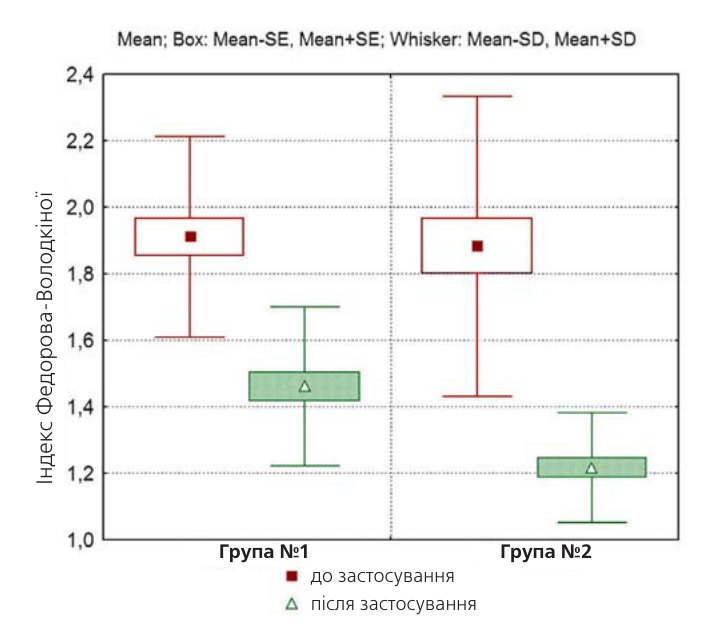
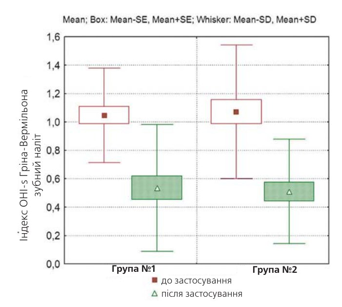
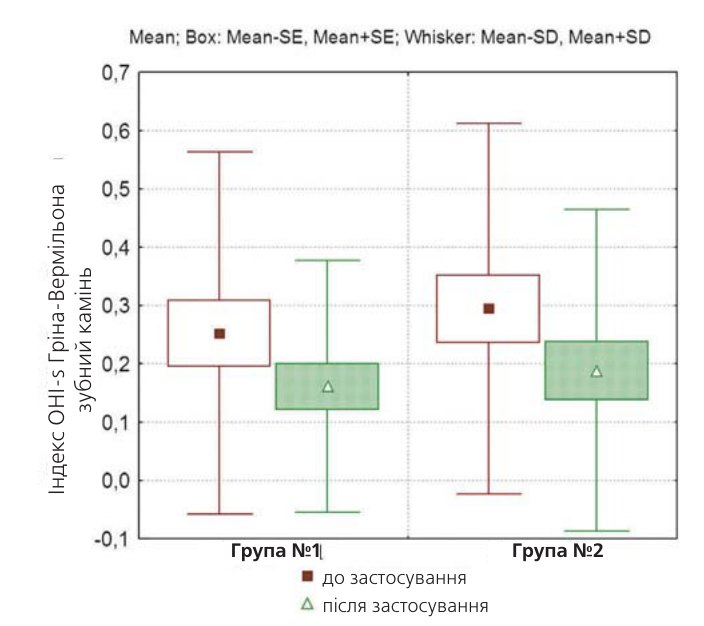
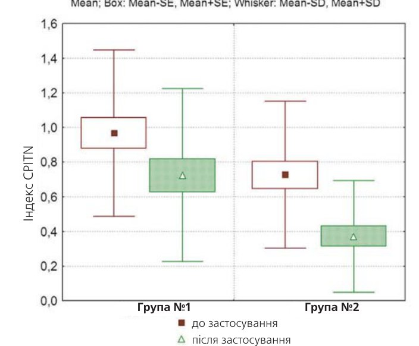
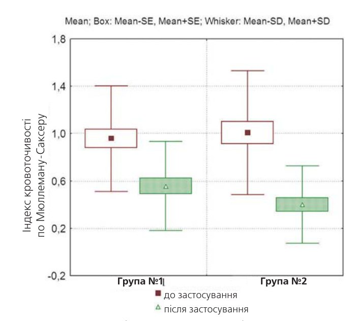
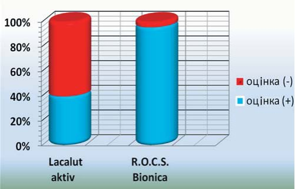
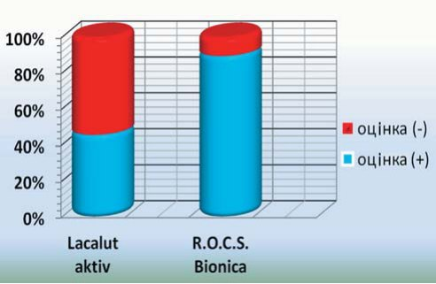
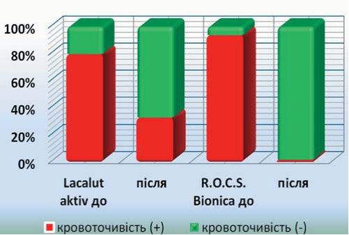
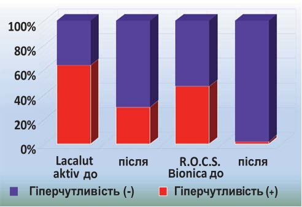

Профілактика · журнал «ДентАрт» 2013 №2 (71)
Клінічна ефективність зубних паст на основі екстрактів лікарських трав і хлоргексидину
CLINICAL EFFICACY OF TOOTHPASTES BASED ON HERBAL EXTRACTS AND CHLORHEXIDINE
Вступ
Проблема профілактики захворювань пародонту займає одне з провідних місць у сучасній стоматології.1 Важливість цієї проблеми обумовлюється значною поширеністю захворювань пародонту у всьому світі, тяжкістю їх перебігу, негативним впливом на загальне здоров'я людини.2, 3 Гіперчутливість твердих тканин зубів до різних подразників і за результатами епідеміологічних досліджень зустрічається з частотою до 57% дорослого населення з приростом у вікових групах 40-49 років (84,2%) і у хворих із запальними захворюваннями пародонту (ЗЗП) (72,0%-98,0%).4, 5 Як правило, механізмом, що ініціює виникнення гіперчутливості зубів, є рецесія ясен при запальних захворюваннях пародонту.6-8 За оцінками різних авторів, у пацієнтів з пародонтитом поширеність гіперчутливості зубів становить від 60% до 98%.9-11 Тільки систематична і правильно організована гігієна порожнини рота може стати ефективним засобом як у профілактиці, так і в лікуванні запальних захворювань пародонту.12,13 Особливе місце в цьому напрямі займає вибір лікувально-профілактичної зубної пасти. Більшість таких паст як активний інгредієнт містять популярні антисептики, наприклад хлоргексидину біглюконат або триклозан. Ці пасти мають високу антимікробну активність, і їх використання призводить до пригнічення не лише патогенної, але й сапрофітної мікрофлори, що при тривалому і безконтрольному використанні може спричиняти дисбактеріоз у порожнині рота і резистентність патогенних штамів до існуючих антимікробних препаратів, знижуючи ефективність лікування в цілому. Тому останнім часом підвищується інтерес до паст на основі натуральних компонентів — екстрактів лікарських трав і рослин.
Зубні пасти, що містять екстракти рослин, традиційно користуються популярністю, проте клінічні дані щодо їх протизапальної ефективності найчастіше відсутні. Найбільш вивченою подібною пастою можна вважати Пародонтакс-Ф/Parodontax-F (Глаксо Сміт-Кляйн/Glaxo SmithKline, Велика Британія), проте її ефект ґрунтується не лише на властивостях екстрактів — зубні пасти Parodontax як абразив містять бікарбонат натрію (67,2%), що забезпечує створення гіпертонічного середовища і залужнення.14, 15 Враховуючи стрімке розширення асортименту протизапальних зубних паст на основі натуральних компонентів, було прийнято рішення про проведення прямого порівняльного дослідження зубної пасти на основі натуральних компонентів і зубної пасти, що містить потужний антибактеріальний комплекс.
Мета дослідження
Мета цього дослідження — оцінити і порівняти ефективність засобів гігієни ротової порожнини з симультанним протизапальним і таким, що знижує підвищену чутливість твердих тканин зубів, ефектом для пацієнтів із запальними захворюваннями пародонту. Усунення симптомів запалення в тканинах пародонту і симптоматична терапія гіперчутливості зубів, що самостійно реалізовуються пацієнтами, — значущі етапи в комплексному плані лікування запальних захворювань пародонту.
Завдання дослідження
- Визначити протизапальну активність досліджуваних зубних паст на підставі ряду об'єктивних критеріїв і стандартних індексів.
- Порівняти ефективність цих паст у зниженні підвищеної чутливості зубів.
Матеріали і методи дослідження
У дослідженні брало участь 60 чоловік у віці від 25 до 45 років, котрі спостерігають регулярні прояви підвищеної чутливості зубів і мають симптоми запалення пародонту різного ступеня.
Пробанти випадковим чином були розподілені на дві групи порівняння по 30 учасників і отримали по дві досліджувані пасти (перефасовані у стандартні туби, без маркування) для дворазового застосування. Усі досліджувані, включені в когортне контрольоване дослідження, залежно від терапії, що проводиться, були поділені на дві основні групи.
Группа №1 — 30 піддослідних застосовували зубну пасту, активними компонентами якої є хлоргексидин, алантоїн, бісаболол, алюмінію лактат, алюмінію фторид (Лакалут актив/Lacalut aktiv, Dr. Theiss Naturwaren GmbH, Німеччина). RDA цієї пасти — 60-80 (джерело — E. Kramer, Prophylaxefibel, Deutscher Arzteverlag, 2009, p. 99).
Группа №2 — 30 піддослідних застосовували зубну пасту на основі натуральних рослинних екстрактів, компонентами якої є активні фракції солодки, чебрецю і ламінарії (РОКС Біоніка/R.О.C.S. Bionica, DRC). RDA пасти — 50,9 (дані виробника).
Проводили чищення зубів двічі на день — уранці та увечері — за стандартною методикою чищення зубів, рекомендованою ВООЗ.
Характер дослідження: рандомізоване, неконтрольоване, моноцентрове, подвійне сліпе.
Кожному пацієнтові до початку дослідження і після його закінчення проведені:
- клінічне обстеження ротової порожнини: огляд, індексна оцінка ротової порожнини, виявлення чинників, здатних викликати гіперчутливість зубів;
- оцінка суб'єктивних відчуттів на предмет смаку зубних паст, гіперчутливості зубів і кровоточивості зубів до і після застосування паст.
Для оцінки гігієнічних властивостей були використані:
- індекс Федорова-Володкіної;
- індекс OHI-s Гріна-Вермільона;
- індекс CPITN.
Для оцінки протизапальної дії на тканини пародонту застосовувалися:
- індекс кровоточивості по Мюллеману-Саксеру;
- розчин Шиллера-Писарєва.
Для оцінки гіперчутливості твердих тканин зубів:
- фіксувався рівень чутливості зубів до і після використання зубної пасти (суб'єктивно — з використанням тактильних, термічних подразників; повітряної і водної проби).
Результати дослідження
У ході дослідження обидві зубні пасти продемонстрували високу профілактичну ефективність за один місяць застосування, причому саме в тому контексті, який заявлений виробником. Позитивна динаміка індексів спостерігалася незалежно від виду пасти, проте вираженість клінічних змін у групах значно різнилася, хоча початкові показники були практично однаковими.
У пацієнтів обох груп за час використання зубних паст помітно поліпшився гігієнічний стан ротової порожнини. Про це свідчать середні показники редукції індексу Федорова-Володкіної, Гріна-Вермільона, CPITN.
1. До застосування досліджуваних паст показники індексу Федорова-Володкіної (мал. 1) у групах №1 і №2 були практично однаковими. У першій групі показник індексу становив 1,91, у другій — 1,89. Після проведеного дослідження у першій групі пацієнтів, які використовували зубну пасту Лакалут актив/Lacalut aktiv, показник індексу Федорова-Володкіної в середньому зменшився і становив 1,52. Найвищий ступінь редукції було отримано у другій групі, що використовувала пасту РОКС Біоніка/R.О.C.S. Bionica, — 1,22.


2. Значення індексу OHI-s Гріна-Вермільона (мал. 2, 3) до застосування паст також були практично однаковими і становили: за зубним нальотом у групі №1 — 1,05, у групі №2 — 1,07; за зубним каменем — 0,25 і 0,29 відповідно. Після дослідження значення індексу OHI-s Гріна-Вермільона за зубним нальотом у першій групі становили 0,64, а в другій — 0,47. Також зменшився індекс OHI-s Гріна-Вермільона за зубним каменем: у групі №1 — 0,19, у групі №2 — 0,16.
3. Показники індексу CPITN (мал. 4) до дослідження в групі №1 становили 0,97, а в групі №2 — 0,73. Після проведеного дослідження в першій групі індекс CPITN дорівнював 0,73, а в другій — 0,36.


4. Показники індексу кровоточивості за Мюллеманом-Саксером (мал. 5) у першій групі до застосування паст становили 0,96, а в другій — 1,01. Після використання паст показники кровоточивості знизилися: у першій групі індекс дорівнював 0,56, а у другій — 0,18.

Таким чином, у даному випадку правильно підібране поєднання лікарських трав у зубній пасті РОКС Біоніка/R.O.C.S. Bionica дозволило без застосування антибактеріальних агентів неприродного походження досягти високої протизапальної активності.
5. При оцінці суб'єктивних відчуттів пацієнта щодо смаку пасти (мал. 6) паста Лакалут актив/Lacalut aktiv сподобалася 40% пацієнтів, а паста РОКС Біоніка/R.О.C.S. Bionica — 96,7%.
6. При оцінці суб'єктивних відчуттів пацієнта щодо кольору пасти (мал. 7) паста Лакалут актив/Lacalut aktiv сподобалася 40% пацієнтів, а паста РОКС Біоніка/R.О.C.S. Bionica — 90%.


7. У групі №1 кровоточивість при чищенні зубів початково реєструвалася у 80% пацієнтів. Наприкінці дослідження кровоточивість при чищенні зубів збереглася у 33% досліджуваних. У групі 2 початково кровоточивість при чищенні зубів фіксувалася у 93,3% пацієнтів. Наприкінці дослідження кровоточивість при чищенні зубів не виявлена у жодного пацієнта (мал. 8).
8. Гіперчутливість (мал. 9) до застосування досліджуваних паст у групі №1 було виявлено у 33% пацієнтів, а в групі №2 — у 46,7%. Після дослідження наявність підвищеної чутливості збереглася практично у всіх пацієнтів першої групи — її засвідчили ті ж самі 30%. У групі №2 підвищену чутливість не було виявлено у жодного пацієнта.


Література
- Орехова Л.Ю. и соавторы. Заболевания пародонта. Москва, Поли Медиа Пресс, 2004. —432 с.
- Грудянов А. И., Овчинникова В. В. Профилактика воспалительных заболеваний пародонта. —М.: ООО «Медицинское информационное агентство», 2007. —80 с.
- Григорьян А. С., Грудянов А. И., Рабухина Н. А., Фролова О. А. Болезни пародонта // Руководство для врачей. –Москва, 2004. —287 с.
- Акулович А. В. Линия Sensodyne от «Глаксо СмитКляйн» — комплексная защита от повышенной чувствительности твердых тканей зубов и десен // Современная стоматология. —Минск. —2007. —№4. —С.48-49.
- Те Е. А., Шалтыкова Ю. Г. Инновационная технология профилактики и лечения гиперчувствительности дентина при проведении профессиональной гигиены полости рта у больных с заболеваниями пародонта // Институт стоматологии. —№2 (51). —2011. —С.32-34
- David H. Pashley, Franklin R. Van B. Haywood, Marie A. Collins, Connie L. Drisko. Consensus-Based Recommendations for the Diagnosis and Management of Dentin Hypersensitivity // Inside Dentistry. —October. —2008. —Vol. 4. —№ 9 (Special Issue).
- Addy M. Dentine hypersensitivity: definition, prevalence, distribution and etiology. In: Addy M., Embery G., Edgar W. M., Orchardson R., etc. Tooth Wear and Sensitivity: Clinical Advances in Restorative Dentistry. Martin Dunitz, London, 2000:239-248.
- Nishida M., Katamsi D., Uchida A. et al. Hypersensitivity of the exposed root surface after surgical periodontal treatment // J Osaka Univ Dent Schl. 1976;16:73-85.
- Drisko C. Dentine hypersensitivity — dental hygiene and periodontal considerations // Int Dent J. 2002;52:385-393.
- Drisko C. Oral hygiene and periodontal considerations in preventing and managing dentine hypersensitivity // Int Dent J. 2007;57:399-410.
- Addy M. Dentine hypersensitivity: new perspectives on an old problem // Int Dent J. 2002;52:367-375.
- Канканян А.П., Леонтьев В.К. Болезни пародонта: новые подходы в этиологии, патогенезе, диагностике, профилактике и лечении. —Ереван, 1998.
- Иванов В. С. Заболевания пародонта. —М.: Медицина, 1989. —272 с.
- Орехова Л. Ю., Прохорова О. В., Ермаева С. С., Акулович А. В., Лисовая Н. Н. Клинико-микробиологическое исследование лечебно-профилактической пасты Parodontax-F // Пародонтология. —№3(28). –2003. –С.25-29.
- Banting D., Bosma M., Bollmer B. Clinical effectiveness of a 0,12% chlorhexidine mouthrinse over two years // J Dent Res. 1989;68:1716-1718.